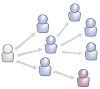

Las Redes son formas de interacción ocial, definida como un intercambio dinámico entre personas, grupos e instituciones en contextos de complejidad.
Un sistema abierto y en construcción permanente que involucra a conjuntos que se identifican en las mismas necesidades y problemáticas y que se organizan para potenciar sus recursos.
| TWITER | TUENTI |
El concepto de Web Semántica constituye en estos momentos un proyecto de futuro para la organiación de la información en la Web.
Es un programa informático que permite crear una estructura de soporte (framework) para la creación y administración de contenidos, principalmente en páginas web, por parte de los administradores, editores, participantes y demás usuarios.Consiste en una interfaz que controla una o varias bases de datos donde se aloja el contenido del sitio web